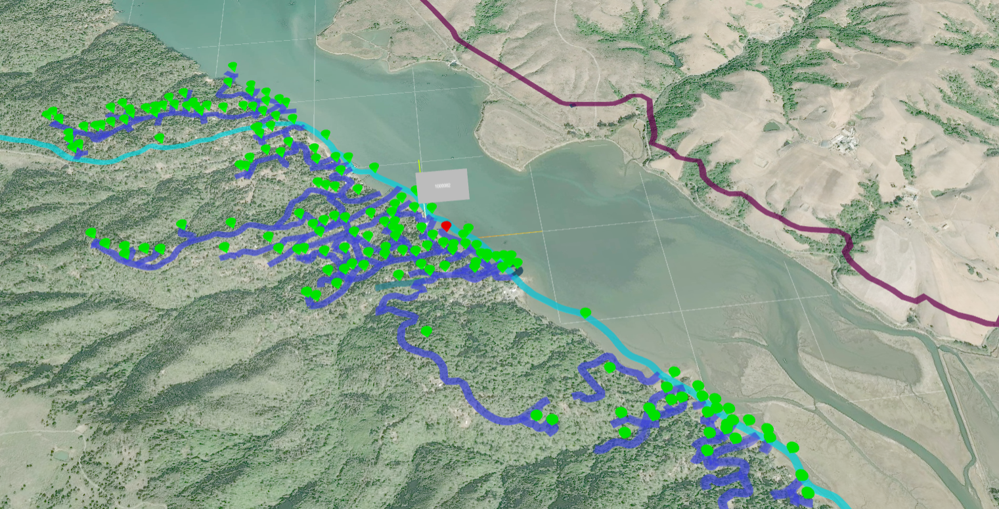
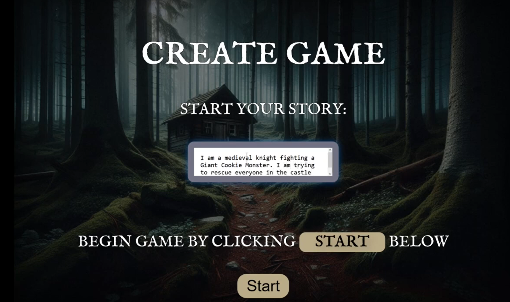

Maryann Godje
Hi, I'm Maryann Godje! I'm a current student at UC Santa Cruz studying Computer Science. I'm passionate about VR/AR/XR, Human-Computer Interaction, computer graphics and vision, game development, and web development. I'm interested in research to help improve user experiences and make technology more accessible to everyone. My next steps are achieving a Masters of Science in Computer Science and applying for internship opportunities! 😊


Projects
Wildfire Evacutaion (2024)
This project was developed in the Social Emotional Technology (SET) lab at UC Santa Cruz under the direction of Dr. Katherine Isbister and PhD student Samir Ghosh. This project is a multi-user VR experience that aided civil engineers to problem solve the unfortunate traffic situation that occured during wildfire evacuation in Iverness, CA. The goal is to find better roads to redirect citizens to whilst first responders handle the fire. My contributions to this project included developing raycasting and calloutable features in the frontend, which allow users to hover, click, and display the information of cars and roads in VR and local enviornments. I also networked in the backend to make sure these features were more allocentric. This allows all users in the VR space to see a person's pop-ups instead of just the person who selected the pop-up.
Programming Languages used: Three.js and Node.js
Apeiro (2024)
This project was developed in Dr. Daniel Shapiro's CMPM 146 Game AI class, which I took in Summer of 2024. I worked in a team of 4 to develop an AI Visual Novel game where the user can tell the AI to generate any story they wanted. The LLM model, then, creates a storyline with a climax and resolution, as well as displays images relevant to each scene. The player gets 5 options after each scene: 4 AI-generated options or a "write your own" selection where the player can change the trajectory of the story. My contributions included developing the frontend and web development features with Three.js to give a more mystical feel to the game. I explored the great possibilites of HTML by creating several webpages (homepage, game selection page, game start page, etc.) to ehance user experience. I learned how to effectively brainstorm ideas and communicate with my team members to produce a high-quality prototype for a game.
Concepts Learned: Machine Learning, LLMs, Game Development
Programming Languages used: Python, Three.js, HTML